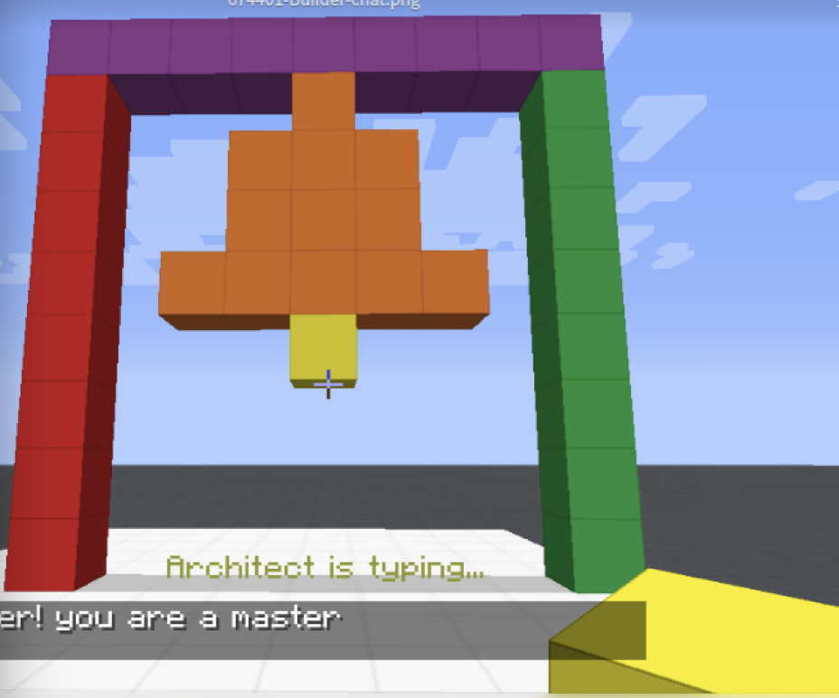

Last Week’s Work Review
key points from last week’s meeting:
- sequence of instructions matters and how can we capture this key feature
- e.g.,

- the agent must build pillars before it can build the bell
- e.g.,
- To generate training dataset. We can also use Monte Carlo methods to randomly extract movements from trajectories of human players
- compared to create random agents from scratch, Monte Carlo imitation methods would generate a more human-like trajectories
I finished the visual module training codes on Wednesday this week (a little bit late). But many codes are reusable next time.
so far the accuracy of visual module is desirable ($\approx 98.9%$)
This week we are going to focus on “text to grids” conversion
Originally the second stage is to label the intents of conversation sentences for the “Modular RL model”. However, Trevor and Nir suggested that I can start from simpler works first.
- One possible task is to rebuild human Builder’s (intermediate) structure based on (partial) instructions from Architect agent.
- well, are we assuming that human Builder’s actions are perfect solution to the Architect instructions?
- how can we break this assumption?
- we can imitate human players first and after that we can still improve the agent by providing them with good reward signal
- well, are we assuming that human Builder’s actions are perfect solution to the Architect instructions?
Besides Builder task, Architect task is also very interesting
- e.g., how to convey instructions to the agent, what would be the best workload for each conversation step?
- baseline, one block at a time …
You need password to access to the content, go to Slack *#phdsukai to find more.
Part of this article is encrypted with password: